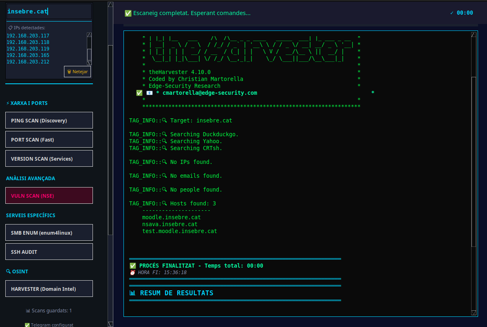

💻 Documentació Tècnica del Codi - Harvester
Dependències Necessàries
subprocess: Execució de theHarvesterthreading: Execució asíncronare: Expressions regularstkinter: GUI- Externa:
theHarvesterv4.10.0+
Arquitectura
┌─────────────────────────────────────────────────────────┐
│ GUI (AuditorGUI) │
│ - Botó HARVESTER │
│ - start_harvester_scan() │
└────────────────────┬────────────────────────────────────┘
│
▼
┌─────────────────────────────────────────────────────────┐
│ Funció d'Execució │
│ - harvester_scan(target, stop_event) │
│ - Executa theHarvester com subprocess │
└────────────────────┬────────────────────────────────────┘
│
▼
┌─────────────────────────────────────────────────────────┐
│ Processament de Dades │
│ - prettify_harvester(raw) │
│ - ScanDataParser.parse_harvester(raw_output) │
└────────────────────┬────────────────────────────────────┘
│
▼
┌─────────────────────────────────────────────────────────┐
│ Visualització │
│ - show_summary() │
│ - Terminal amb colors │
└─────────────────────────────────────────────────────────┘
Funcions
1. prettify_harvester(raw: str) -> str
Ubicació: auditoria_definitiu.py (línies 193-219)
Propòsit: Formata la sortida bruta de theHarvester per millorar la visualització al terminal.
Paràmetres:
- raw (str): Sortida bruta de theHarvester
Retorn: String formatat amb tags de color
Funcionament:
def prettify_harvester(raw: str) -> str:
lines = raw.splitlines()
out_lines = []
for raw_line in lines:
line = strip_ansi(raw_line).rstrip()
# Destacar seccions importants
if line.startswith("[*]") or "Searching" in line:
out_lines.append(f"TAG_INFO::🔍 {line.lstrip('[*] ')}")
elif "Emails found:" in line or "Hosts found:" in line:
out_lines.append(f"SECTION_HEADER::{line}")
elif "@" in line and not line.startswith("["):
out_lines.append(f"TAG_SUCCESS::📧 {line}")
else:
out_lines.append(f" {line}")
return "\n".join(out_lines).strip() + "\n"
Tags utilitzats:
- TAG_INFO:: → Color blau (informació)
- TAG_SUCCESS:: → Color verd (emails trobats)
- TAG_FAIL:: → Color vermell (errors)
- SECTION_HEADER:: → Color cian (títols)
2. ScanDataParser.parse_harvester(raw_output: str) -> dict
Ubicació: auditoria_definitiu.py (línies 577-643)
Propòsit: Extreu dades estructurades de la sortida de theHarvester.
Paràmetres:
- raw_output (str): Sortida bruta de theHarvester
Retorn: Diccionari amb dades parsejades
Estructura de retorn:
{
'emails': ['user@example.com', 'admin@example.com'],
'hosts': ['www.example.com', 'mail.example.com'],
'ips': ['192.0.2.1', '192.0.2.2'],
'subdomains': ['blog.example.com'],
'sources_used': ['duckduckgo', 'yahoo', 'crtsh'],
'target_domain': 'example.com'
}
Algorisme:
- Detecció del domini objectiu:
if 'Target:' in clean_line or 'Searching' in clean_line:
parts = clean_line.split()
for part in parts:
if '.' in part and not part.startswith('['):
data['target_domain'] = part
break
- Identificació de fonts:
if 'Searching' in clean_line:
for word in clean_line.split():
if word.lower() in ['google', 'bing', 'yahoo', 'duckduckgo', ...]:
if word.lower() not in data['sources_used']:
data['sources_used'].append(word.lower())
- Extracció d'emails:
if '@' in clean_line and not clean_line.startswith('['):
email = clean_line.strip()
if email and email not in data['emails']:
data['emails'].append(email)
- Extracció d'IPs (amb regex):
if current_section == 'ips':
ip_pattern = re.findall(r'\b(?:\d{1,3}\.){3}\d{1,3}\b', clean_line)
for ip in ip_pattern:
if ip and ip not in data['ips']:
data['ips'].append(ip)
3. harvester_scan(target, stop_event=None) -> str
Ubicació: auditoria_definitiu.py (línies 1901-1943)
Propòsit: Executa theHarvester com a subprocess i captura la sortida.
Paràmetres:
- target (str): Domini a investigar (NO IP)
- stop_event (threading.Event): Event per aturar el procés
Retorn: String amb la sortida formatada
Comanda executada:
cmd = ["theHarvester", "-d", target, "-b", "duckduckgo,yahoo,crtsh", "-l", "500"]
Paràmetres de theHarvester:
- -d: Domini objectiu
- -b: Fonts (duckduckgo, yahoo, crtsh)
- -l: Límit de resultats (500)
Gestió del subprocess:
def harvester_scan(target, stop_event=None):
if not stop_event:
return "Error intern"
try:
cmd = ["theHarvester", "-d", target, "-b", "duckduckgo,yahoo,crtsh", "-l", "500"]
global current_process
current_process = subprocess.Popen(
cmd,
stdout=subprocess.PIPE,
stderr=subprocess.PIPE,
text=True
)
stdout_acc = []
stderr_acc = []
while True:
if stop_event.is_set():
current_process.terminate()
return "Aturat per l'usuari"
line = current_process.stdout.readline()
if line:
stdout_acc.append(line)
else:
if current_process.poll() is not None:
rem_out, rem_err = current_process.communicate()
if rem_out: stdout_acc.append(rem_out)
if rem_err: stderr_acc.append(rem_err)
break
time.sleep(0.05)
output = "".join(stdout_acc) + "".join(stderr_acc)
return prettify_harvester(output)
except FileNotFoundError:
return "Error: theHarvester no està instal·lat..."
except Exception as e:
return f"Error: {e}"
finally:
current_process = None
4. AuditorGUI.start_harvester_scan(self)
Ubicació: auditoria_definitiu.py (línies 2627-2631)
Propòsit: Handler del botó HARVESTER a la GUI.
Codi:
def start_harvester_scan(self):
if self.scan_in_progress:
return
target = self._prepare_scan("HARVESTER (OSINT)")
if not target:
return
self.execucions(harvester_scan, target)
Flux:
1. Verifica que no hi ha scan en curs
2. Prepara el scan (neteja terminal, mostra capçalera)
3. Executa harvester_scan() en un thread separat
5. AuditorGUI.execucions() - Parsing
Ubicació: auditoria_definitiu.py (línies 2663-2665)
Codi afegit:
elif "HARVESTER" in self.current_scan_type or "OSINT" in self.current_scan_type:
self.current_scan_data = ScanDataParser.parse_harvester(output)
Funcionament:
- Detecta si el scan és HARVESTER/OSINT
- Crida al parser per extreure dades
- Guarda les dades a self.current_scan_data
6. AuditorGUI.show_summary() - Visualització
Ubicació: auditoria_definitiu.py (línies 2729-2763)
Propòsit: Mostra resum visual de les dades OSINT.
Codi:
# Resum de Harvester (OSINT)
if 'emails' in self.current_scan_data or 'hosts' in self.current_scan_data:
data = self.current_scan_data
if data.get('target_domain'):
self.append_text_tagged(f"\n🎯 Domini Objectiu: {data['target_domain']}", "INFO")
if data.get('emails'):
self.append_text_tagged(f"\n📧 Emails Trobats: {len(data['emails'])}", "SUCCESS")
self.append_text_tagged("─" * 65, "CMD")
for email in data['emails'][:10]: # Primers 10
self.append_text_tagged(f" 📧 {email}", "SUCCESS")
if len(data['emails']) > 10:
self.append_text_tagged(f" ... i {len(data['emails']) - 10} emails més", "CMD")
if data.get('hosts'):
self.append_text_tagged(f"\n🌐 Hosts Trobats: {len(data['hosts'])}", "INFO")
# Similar per hosts...
if data.get('ips'):
self.append_text_tagged(f"\n🔢 IPs Trobades: {len(data['ips'])}", "WARN")
# Similar per IPs...
Variables Globals
current_process = None # Procés actual en execució
Configuració
# Fonts que funcionen
sources = "duckduckgo,yahoo,crtsh"
# Límit de resultats
limit = "500"
Gestió d'Errors
Errors capturats:
- theHarvester no instal·lat:
except FileNotFoundError:
return "Error: theHarvester no està instal·lat..."
- Procés aturat:
if stop_event.is_set():
current_process.terminate()
return "Aturat per l'usuari"
- Errors generals:
except Exception as e:
return f"Error: {e}"
Threading
Execució asíncrona:
def execucions(self, func, *args):
def task():
output = func(*args, self.stop_event)
# Processar output...
t = threading.Thread(target=task)
t.daemon = True
t.start()
RESULTAT D'EXECUCIÓ HARVESTER
